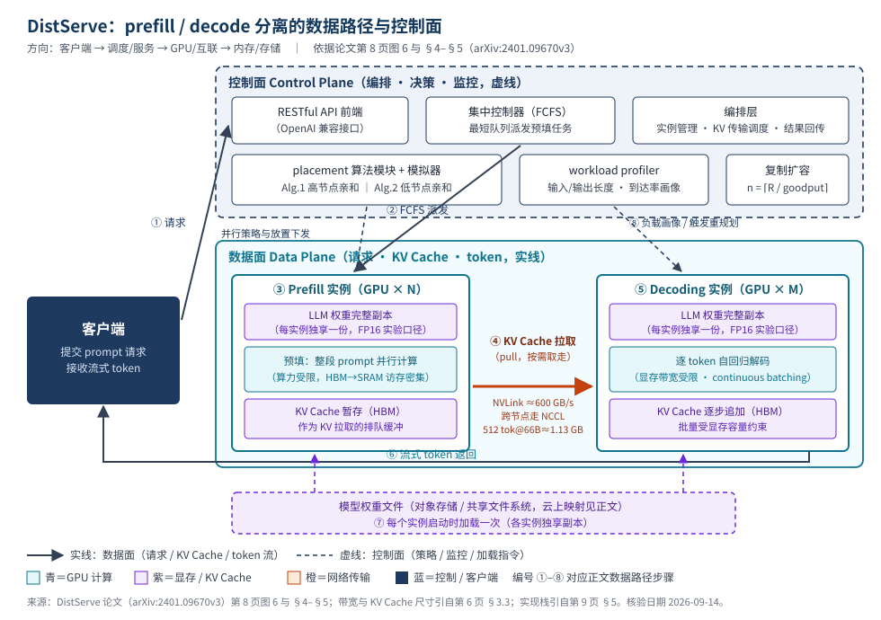

DistServe：面向 goodput 优化的 prefill / decode 分离式大模型服务系统
本页为第 01 篇（推理服务与资源调度类），全部定量内容取自本地论文 PDF 01_DistServe_2401.09670.pdf（arXiv:2401.09670v3，2024-06-06），并逐条标注 PDF 页码与章节。
快速标签与阅读说明
- 生命周期：推理服务
- 形态：分布式（多实例、多 GPU）
- 目标硬件：NVIDIA A100 80GB SXM（论文实验口径）
- 核心资源：GPU 算力 · HBM/KV Cache · 节点内/节点间网络带宽
- 证据状态：P + R（正文含 E/I 标签）
最后核验日期：（逐页核对 PDF 原页；官方仓库已在线核验）。
证据完整度：关键定量结论均带 PDF 页码/表号与完整测试条件，未获取的字段一律写明「论文未明确披露」；仓库经在线核验（R）；云上产品映射为示例（E，未逐一核验规格与价格）；成本与运维建议为参数化推断（I）。本页不设任何评分。
证据标签图例： P＝论文 R＝官方仓库 E＝外部资料 I＝编辑推断
页内目录（13 节，锚点固定）
1. 摘要与一句话判断
| 英文题名 | DistServe: Disaggregating Prefill and Decoding for Goodput-optimized Large Language Model Serving |
|---|---|
| 中文题名（编辑译）I | DistServe：面向 goodput 优化的大语言模型服务预填—解码分离系统 |
| 作者与机构 | Yinmin Zhong、Shengyu Liu、Jianbo Hu、Xuanzhe Liu、Xin Jin（北京大学）；Junda Chen、Hao Zhang（ UC San Diego）；Yibo Zhu（StepFun）P 第 1 页 |
| 版本与日期 | arXiv:2401.09670v3 [cs.DC]，2024-06-06 P 第 1 页；论文 PDF 未标注会议录用信息（截至该版本） |
| 官方代码仓库 | GitHub：LLMServe/DistServe（论文第 2 页脚注 2 给出；在线核验见 #links）R |
| 本地输入 PDF | 01_DistServe_2401.09670.pdf（本页证据来源，不随站点公开分发） |
3 分钟速读
- 问题：现有系统把 prefill 与 decode 共置在同一批 GPU 上连续批处理，导致两阶段互相干扰、排队延迟叠加，且资源与并行策略被耦合绑定，为同时满足 TTFT/TPOT 两套 SLO 只能过度配置 GPU P（第 1、3–4 页）。
- 关键观察：prefill 处理整段 prompt、偏算力受限；decode 每步只处理一个新 token、偏显存带宽受限；两类计算特性与延迟目标天然不同，本就不该共享同一份并行配置 P（第 3 页 §2.1）。
- 方案：按「实例」（一份完整模型权重所在的资源单元）粒度拆出 prefill 实例与 decoding 实例；用「模拟器 + 枚举搜索」在部署前求出每阶段的并行策略、实例数与物理放置（高/低节点亲和两套算法），运行期用 FCFS 加最短队列派发、KV Cache「拉取」传输与周期性重规划 P（第 4、6–8 页）。
- 结果：在 OPT-13B/66B/175B、FP16、A100-80GB 集群、ShareGPT/HumanEval/LongBench 三类负载上，相对 vLLM 与 DeepSpeed-MII，SLO 达标 90% 约束下最多多服务 7.4× 请求、或承受 12.6× 更紧的 SLO；KV 传输时延占比不足 0.1% P（第 1、10–11 页；完整条件见 #experiments）。
- 边界：论文自述在单 GPU/资源受限环境设计空间严重受限、离线吞吐优先场景可能不如 chunked-prefill、未实现抢占与容错 P（第 8、13 页）；实验全部基于 OPT（MHA）与合成泊松到达，SLO 为经验设定 P（第 9 页）。
| 结论/数字 | 指标定义 | 硬件 | 模型/规模 | 精度 | 批量/并发/到达 | 输入/输出长度 | 基线 | 论文定位 |
|---|---|---|---|---|---|---|---|---|
| 最多多服务 7.4× 请求，或承受 12.6× 更紧 SLO，且 >90% 请求满足时延约束 | SLO 达标率 90% 约束下的最大每 GPU 请求速率（goodput）；及可承受的最紧 SLO 倍数 | 4 节点 × 8 × NVIDIA SXM A100-80GB，节点内 NVLINK，跨节点 25 Gbps | OPT-13B/66B/175B（26/132/350 GB） | FP16 | 泊松合成到达、速率扫描；具体批量/并发数值：论文未明确披露 | ShareGPT（输入均值 755.5 / 输出均值 200.3 token）等三数据集 | vLLM（连续批处理 + PagedAttention）；DeepSpeed-MII（chunked-prefill） | 第 1 页摘要；第 9 页 §6.1；第 10–11 页 §6.2（详表见 #experiments） |
2. 问题背景
双阶段计算与双延迟指标
LLM 服务一次请求分两段：prefill 一次性并行处理整段 prompt 生成首个 token；decoding 每步仅处理一个新 token、自回归地生成后续 token P（第 1 页 §1）。由此产生两个独立指标：TTFT（time to first token，prefill 阶段耗时）与 TPOT（time per output token，除首 token 外平均每 token 生成时间）；单请求总时延 = TTFT + TPOT × 解码 token 数 P（第 1–2 页，第 2 页脚注 1）。不同应用的侧重不同：实时聊天机器人重低 TTFT，TPOT 只要快于人的阅读速度（约 250 词/分钟）即可；文档摘要则重低 TPOT P（第 2 页）。
计算特性上，prefill 对算力要求随 token 数超线性增长，长 prompt 时趋向算力受限（13B 模型处理 512 token 即可打满一张 A100）；decoding 每步访存量与 prefill 相当，趋向显存带宽受限；两阶段都要把权重与中间状态在 HBM 与 SRAM 间反复搬运，并把 KV Cache 留在显存中供后续解码复用 P（第 3 页 §2.1）。
共置（colocation）服务的三重问题
- prefill–decode 干扰：一个 prefill 步远长于 decode 步；连续批处理把两者混入同一批，decode 步被拉长（TPOT 恶化），decode 任务也推高 prefill 完成时间（TTFT 恶化），干扰随输入长度增大而加剧 P（第 2 页 §1、第 4 页图 2）。
- 调度难以奏效：即使分开排队，两阶段仍争抢 GPU；优先任何一方都会牺牲另一方，优先级调度失效 P（第 4 页 §2.3）。chunked-prefill 加 piggyback（把长 prefill 切块并捎带 decode）能缓解但不能消除干扰：切得过小 prefill 执行时间变长，切到接近饱和又捎带不上 decode，且 N 个分块导致 O(N²) 次 KV Cache 的 HBM→SRAM 重复加载（非分块为 O(N)）P（第 3–4 页 §2.2–2.3）。
- 资源与并行策略耦合：共置迫使两阶段共享同一套资源分配与并行配置，只能迁就更苛刻的一侧，结果常常是对两侧都过度配置 P（第 4 页 §2.3）。
论文用一组动机实验量化代价：13B 模型、输入 512 / 输出 64 token、单张 A100-80GB、合成摘要负载下，共置系统在 90% SLO 达标率下每 GPU 只能承载约 1.6 req/s，而独立服务的 prefill-only 与 decode-only 曲线分别达 5.6 与 10 req/s；按 2 卡 prefill + 1 卡 decode 组合可得整体 10 req/s（合 3.3 req/s/卡，2.1× 于共置）P（第 1–2 页图 1 及 §1；完整口径见 #experiments 表）。
目标工作负载与约束
目标是在在线、有严格 TTFT/TPOT 双 SLO 的场景下最大化每 GPU goodput——在 SLO 达标率目标（论文主口径 90%）内每张已配置 GPU 可承载的最大请求速率；goodput 越高，达标前提下的单查询成本越低 P（第 1–2 页）。基线系统为采用连续批处理与共置架构的 vLLM、以及 chunked-prefill 方案 DeepSpeed-MII P（第 10 页 §6.1）。
3. 核心机制
实例化分离
论文以实例（instance）为基本单元：管理恰好一份完整模型权重的资源单元，应用模型并行时可横跨多张 GPU。分离后分为 prefill 实例（只做预填、产出首个 token 与 KV Cache）与 decoding 实例（承接 KV Cache 与首 token，做后续逐步解码）；因 decode 的 GPU 利用率低，常见配置是多台 prefill 实例对应一台 decoding 实例 P（第 4 页 §2.3）。
控制面与数据面职责
| 组件 | 平面 | 职责（论文口径） | 证据 |
|---|---|---|---|
| RESTful API 前端 | 控制面 | OpenAI API 兼容接口，接收采样参数（最大输出长度、温度等） | P 第 9 页 §5 |
| 集中控制器 | 控制面 | FCFS 调度：请求派发给当前队列最短的 prefill 实例，随后派给负载最轻的 decoding 实例 | P 第 8 页 §4.3 |
| 编排层 | 控制面 | 管理 prefill/decoding 实例，负责请求派发、KV Cache 传输与结果回传 | P 第 9 页 §5 |
| placement 算法模块 + 模拟器 | 控制面 | 部署前基于 FLOPs/访存延迟模型与历史负载分布，枚举并行配置并模拟 SLO 达标率，二分搜索最大 goodput，输出并行策略、实例数与放置 | P 第 7 页 §4.1、第 17 页附录 A |
| workload profiler / 重规划 | 控制面 | 周期监测平均输入/输出长度、到达率等；模式显著漂移时触发重跑放置算法（秒级求解，权重重载分钟级） | P 第 8 页 §4.3、第 12 页 §6.5 |
| prefill / decoding 实例（并行执行引擎） | 数据面 | Ray actor 实现的 GPU worker 执行推理并分布式管理 KV Cache；集成连续批处理、FlashAttention、PagedAttention；支持 OPT、LLaMA | P 第 9 页 §5 |
| KV Cache 传输 | 数据面 | 「拉取」式：decoding 实例按需取 KV，prefill 实例显存充当排队缓冲；节点内用异步 cudaMemcpy（NVLINK），跨节点用 NCCL | P 第 8 页 §4.3、第 9 页 §5 |
每阶段的批处理与并行策略（离线分析）
- prefill 批处理：先对目标模型+GPU 做性能画像，找出打满 GPU 的临界输入长度
Lm（13B 模型为 512 token / A100）；仅当请求输入短于Lm才合并批处理，否则逐请求调度，prefill 批量总体保持较小 P（第 4–5 页 §3.1、图 3(a)）。 - prefill 并行：分离后的 prefill 实例近似 M/D/1 排队（FCFS、单请求即饱和 GPU）。低到达率下执行时间占主导，算子内并行（intra-op，含速度系数 K，1<K<2）更优；高到达率下排队时延占主导，算子间流水（inter-op，可线性扩速率容量）更优；SLO 越紧、通信越好（K 越小）越偏向 intra-op P（第 5 页 §3.1、式 1–3、图 4）。
- decoding 批处理：单任务严重带宽受限，大批量是提高利用率的关键；分离后可用大批量而不牺牲 TPOT，批量上限受 KV Cache 显存约束，PagedAttention 与 GQA 等可进一步放大批量 P（第 5–6 页 §3.2、图 3(b)）。
- decoding 并行：TPOT SLO 紧时用 intra-op 压低单步时延（收益递减）；吞吐优先时用 inter-op 近线性扩容；模型能放进单卡时，多副本复制同样线性扩速率并降低排队时延，代价是多份权重显存 P（第 5–6 页 §3.2、图 5）。
- 非均匀长度与气泡：真实负载输入长短不一，会使 inter-op 流水出现气泡；系统通过按「批内新 token 数」（批执行时间的可靠指标）平衡各流水批来缓解 P（第 6 页 §3.3、第 8 页 §4.3）。
两个放置算法（部署前求解）
- 高节点亲和（Alg.1）：面向跨节点高速网（如 InfiniBand）集群，prefill 与 decoding 可放任意节点。分别枚举两阶段并行配置、用模拟器评估 SLO 达标下的最大速率，再按
n = ⌈R / goodput⌉复制到目标流量；复杂度 O(NM²)（N 为实例节点数上限，M 为每节点 GPU 数，如 8），最大设置下求解不足 1.3 分钟 P（第 7 页 §4.1、算法 1、第 12 页 §6.5）。 - 低节点亲和（Alg.2）：面向跨节点带宽受限集群。利用 inter-op 把实例切成「段」，把同一 stage 的 prefill 段与 decoding 段共置于同一节点，强制中间状态只走节点内 NVLINK；每节点内枚举配置求最优后复制 P（第 7–8 页 §4.2、算法 2）。
- 模拟器：基于附录 A 的 GEMM/attention 算力-访存模型（A100-80GB 上算术强度 >156 判定算力受限）与历史 trace 拟合的负载分布重采样，预估 SLO 达标率；实测对比误差小于 2% P（第 7 页 §4.1、第 12 页表 2、第 17 页附录 A）。
在线调度要点
运行期保持简单 FCFS：集中控制器把请求派给最短队列的 prefill 实例，prefill 完成后交由负载最轻的 decoding 实例；prefill 按 Lm 凑批（多个短 prompt 合批或单个长 prompt 独占），decoding 以最大批量为凑批目标；KV Cache 用拉取式传输防止突发把 decoding 实例显存打爆 P（第 8 页 §4.3）。
4. GPU/系统数据路径

端到端文字序列（与图中编号一致）
- ① 请求接入：客户端调用 OpenAI 兼容的 RESTful API 提交 prompt 与采样参数（最大输出长度、温度等）P（第 9 页 §5）。
- ② 派发：集中控制器按 FCFS 将请求派给当前队列最短的 prefill 实例 P（第 8 页 §4.3）。
- ③ 预填执行：prefill 实例的 GPU worker 从 HBM 读权重与 prompt token，经 FlashAttention kernel 与 GEMM（HBM→SRAM 访存密集）整段并行计算，产出首个输出 token，并逐层写入该请求的 KV Cache P（第 3 页 §2.1、第 9 页 §5、第 17 页附录 A）。
- ④ KV 传输：KV Cache 不立即搬运，而是留在 prefill 实例显存中充当排队缓冲；目标 decoding 实例按需「拉取」对应请求的 KV（同节点走 NVLINK 上的异步 cudaMemcpy，跨节点走 NCCL）P（第 8 页 §4.3、第 9 页 §5）。
- ⑤ 逐 token 解码：decoding 实例将请求并入 continuous batching 批次，每步只喂入一个新 token（显存带宽受限），并把新增 KV 追加到 HBM；直至终止符 P（第 1 页 §1、第 5 页 §3.2、第 9 页 §5）。
- ⑥ 流式返回：已生成 token 与结果由编排层回传、流式送达客户端 P（第 2 页 §2、第 9 页 §5）。
- ⑦ 权重加载（控制面触发）：每台实例持有一份独享的完整权重副本，实例启动时从权重文件加载一次；prefill 与 decoding 实例各持一份 P（第 4 页 §2.3 实例定义、第 8 页 §4.3 权重重载）。
- ⑧ 画像与重规划（控制面闭环）：workload profiler 持续监测平均输入/输出长度、到达率；检测到显著模式漂移即重跑放置算法（秒级）并重载权重（分钟级），完成扩缩容或策略切换 P（第 8 页 §4.3、第 12 页 §6.5）。
| 数值/事实 | 对象与条件 | 论文定位 |
|---|---|---|
| ≈1.13 GB | 单个 512-token 请求的 KV Cache，OPT-66B（MHA） | P 第 6 页 §3.3 |
| ≈90 Gbps | 10 req/s 到达率下隐含的 KV 传输带宽需求（11.3 GB/s） | P 第 6 页 §3.3 |
| 600 GB/s | A100 节点内 NVLINK 峰值带宽（论文口径） | P 第 6 页 §3.3 |
| 800 Gbps | 论文举例的现代 LLM 集群跨节点 InfiniBand 带宽 | P 第 6 页 §3.3 |
| 25 Gbps | 论文实验测试床的跨节点带宽（4 节点 × 8 × A100-80GB SXM） | P 第 9 页 §6.1 |
| 26 / 132 / 350 GB | OPT-13B / OPT-66B / OPT-175B 模型权重体积（FP16 口径） | P 第 9 页表 1 |
| AI > 156 | A100-80GB 上 GEMM 判定算力受限的算术强度阈值；prefill 注意力 AI≈2b/3＝10.677（b=16）或 21.333（b=32），属显存受限 | P 第 17 页附录 A |
| 350 GB × 2 > 640 GB | 175B 模型一对 prefill+decoding 完整实例放不进 8×80GB 单节点，需 Alg.2 的分段同置 | P 第 7 页 §4.2 |
5. 架构权衡
-
吞吐—延迟
得：消除干扰后，两阶段可各自逼近 SLO 约束下的最大速率，per-GPU goodput 上升 P（第 2、10–11 页）。
失：目标函数从「总 token 吞吐」改为「SLO 内 goodput」；若无 SLO，共置+chunked-prefill 的原始吞吐可能更高 P（第 13 页 §7）。 -
算力—内存
得：prefill 用满算力、decoding 用大批量摊薄带宽受限，各自最优 P（第 4–6 页 §3.1–3.2）。
失：两台实例各存一份完整权重，KV Cache 又要在 prefill 显存多驻留一段排队时间；大模型（175B＝350 GB）连单节点放一对实例都困难 P（第 4、7–8 页）。 -
复杂度—收益
得：放置算法把「GPU 数 × 并行策略 × 复制数」的组合搜索自动化，单次求解不足 1.3 分钟，可随负载自动重规划 P（第 7、12 页）。
失：相比单系统共置，多实例编排、KV 传输管理、画像与重规划显著抬高运维与排障复杂度 I（基于第 6–9 页组件面的编辑判断）。 -
扩展性—故障域
得：两阶段独立复制、独立扩缩容，inter-op 近线性扩速率容量 P（第 3、5–6 页）。
失：跨实例 KV 依赖把 prefill 与 decoding 绑成依赖图，单个 decoding 实例故障可能波及映射其上的全部 prefill 实例；跨节点带宽不足时扩展还受放置约束 P（第 6–8 页）。 -
一致性/精度—效率
得：分离不改变计算图，输出与共置执行等价（论文以同样 FP16 口径评测质量负载）P（第 9 页 §6.1）。
失：KV 传输量与精度和上下文长度直接挂钩：FP16 下 512-token/66B 单请求即 1.13 GB，长上下文线性放大传输压力（论文未涉及 KV 量化，此为编辑推断边界）P+I（第 6 页 §3.3；第 13 页 §7 长上下文讨论）。
6. 云上部署映射
以下映射厂商中立；具体产品仅作示例并标 E（规格与命名以各云厂商当时目录为准，本页未逐一在线核验）。云实例规格与论文硬件的一致性需在 PoC 中复核 I。
| 维度 | 论文口径 | 云上映射（示例） | 级别 |
|---|---|---|---|
| 计算实例 | 4 节点 × 8 × NVIDIA SXM A100-80GB，节点内 NVLINK P（第 9 页 §6.1） | 8 卡 A100 80GB SXM 整机实例，如 AWS p4de.24xlarge、Google Cloud a2-ultragpu-8g、Azure ND A100 v4 系列；选用 H100 类实例属升级推断 | E 示例 + I |
| GPU 拓扑/互联 | 节点内 NVLINK 峰值 600 GB/s；跨节点实验床 25 Gbps，理想 800 Gbps IB P（第 6、9 页） | 优先同可用区 + 高带宽 RDMA/InfiniBand 实例组（如 AWS EFA/OFDN 网络）；跨节点带宽是选型硬约束 | P + E |
| 网络（KV 面） | KV 传输需求 ≈90 Gbps 量级（512-token/66B @10 rps）；低带宽集群须用 Alg.2 同节点分段 P（第 6–8 页） | prefill 与 decoding 同节点或同 NVLink 域部署；跨节点流量走专用 RDMA 网卡与独立子网，与用户流量隔离 | P + I |
| 存储 | 权重每实例加载一次；加载耗时「分钟级」 P（第 8 页 §4.3）；权重对象存储/共享盘形态：论文未明确披露 | 模型权重放共享文件系统/对象存储（如云厂商的并行文件存储），预热到节点本地 NVMe I | P + I |
| 编排 | 实例 = 一组 GPU（TP/PP 组合）；系统基于 Ray actor 管理工作进程 P（第 4、18 页、第 9 页 §5） | Kubernetes 上按实例建 Pod 组并绑定整卡资源（Gang scheduling）；控制器/编排层为独立无状态部署 I | P + I |
| 弹性 | 按 goodput 比例复制实例扩容（n=⌈R/goodput⌉）；负载漂移触发重规划（秒级求解 + 分钟级生效） P（第 7–8、12 页） | 以重规划结果驱动实例组的水平扩缩容；节点池预留 GPU 余量以吸收重规划窗口 I | P + I |
| 可观测 | 论文把请求生命周期分为 prefill 排队/执行、传输、decoding 排队/执行五段，并输出 SLO 达标率 P（第 10–11 页 §6.1、§6.3） | 按五段埋点接入指标系统（时延分布、SLO 达标率、队列深度、KV 传输量），对达标率跌破目标设告警 I | P + I |
7. 成本 / 性能 / SLO
| 指标 | 定义 | 口径/单位 | 出处 |
|---|---|---|---|
| TTFT | time to first token：prefill 阶段耗时（含排队） | 秒；论文实验按 P90 或平均值报告（图 1 为 P90） | P 第 1–2 页 |
| TPOT | time per output token：除首 token 外，平均每输出 token 耗时 | 秒；P90 或平均口径 | P 第 1–2 页 |
| 单请求总时延 | TTFT + TPOT × 解码 token 数 | 秒 | P 第 2 页脚注 1 |
| SLO attainment | 满足 TTFT 与 TPOT 双阈值约束的请求比例 | 百分比；论文主目标 90%，附录验证 99% | P 第 1、10、18 页 |
| goodput / per-GPU rate | SLO 达标率目标内，每张已配置 GPU 可承载的最大请求速率 | req/s/GPU | P 第 1–2 页 |
| SLO Scale | 把表 1 中两 SLO 同比线性缩放的系数，衡量可承受的最紧时延要求 | 无量纲倍数（越小越紧） | P 第 10–11 页 |
容量规划变量
- 到达率 R 与负载分布（输入/输出长度分布、到达过程；论文用泊松合成）P（第 7、9 页）。
- 临界输入长度
Lm与 prefill 速度系数 K（依模型/带宽/放置而变，需画像）P（第 4–5 页）。 - SLO 目标（TTFT/TPOT 阈值与达标率 90%/99%）——直接决定可行并行配置与实例数 P（第 9–10 页）。
- 实例数：
n = ⌈R / goodput(配置)⌉，prefill 与 decoding 分列，再乘复制数 P（第 7 页算法 1）。 - 显存下限：每实例完整权重 ×2 类实例 + KV Cache（含 prefill 侧排队缓冲）；175B 一对完整实例即需 >640 GB P（第 7 页 §4.2、第 9 页表 1）。
- KV 传输带宽：随到达率 × 单请求 KV 体积（如 66B/512-token 为 1.13 GB）线性增长 P（第 6 页 §3.3）。
成本公式（参数化，编辑推断）
I 论文未披露任何价格数据，以下仅为参数化估算框架（不写死即时云价）：
其中：N_pf、N_dec ＝ 两类实例 GPU 总卡数；P_pf、P_dec ＝ 单卡时价（元/卡·小时，按采购日查询并记录日期）；
R_slo ＝ 全系统在 SLO 达标率目标下的总 goodput（req/s）；GPU 时长利用率按重规划窗口折减。
敏感项：SLO 越紧 → 可行 goodput 下降 → 卡数上升（论文图 8 下排的 SLO Scale 实验）；输入越长 → prefill 时间与 KV 体积增大 → prefill 卡数与传输带宽上升；跨节点带宽不足 → 被迫同节点分段放置 → 可能升级整机规格；双份权重 → 大模型最低卡数抬升 P+I（数字事实出自第 6–11 页，方向性推断为编辑标注）。
明确缺口：token 级成本、功耗/制冷、多模型混部收益、云价波动——论文未明确披露，需以 PoC 实测与当期报价补齐。
8. 安全与可运维性
| 维度 | 论文事实 | 云上建议（编辑推断） |
|---|---|---|
| 租户隔离 | 论文按单模型服务建模，未讨论多租户调度与配额 P（全篇无多租户机制）＝论文未明确披露 | 按实例组划分租户或业务线；控制器增加按租户的配额与准入；不同敏感级租户不共享 prefill/decoding 实例 |
| 数据驻留 | KV Cache（含用户 prompt 中间态）驻留 GPU 显存，且拉取模式下 prefill 显存充当排队缓冲 P（第 8 页 §4.3） | 明确 KV/Prompt 的驻留边界（显存、是否落盘、可用区），跨区/跨国服务需评估驻留合规 |
| 缓存残留 | 论文未披露实例回收/迁移时的显存清理机制 ＝论文未明确披露 | 实例销毁与重规划切换时执行显存清零/重置；把「残留 KV 清理」纳入重规划的切换步骤与验收项 |
| 镜像/供应链 | 技术栈含 Python 编排（6.5K 行）+ C++/CUDA 引擎（8.1K 行）、NCCL、Ray，集成 FlashAttention/PagedAttention；官方仓库以 SwiftTransformer 为后端 P（第 9 页 §5）+R | 锁定 CUDA/driver/NCCL/Ray/仓库 commit 的版本矩阵；镜像扫描与 SBOM；上游组件升级单独回归 |
| 权限 | 前端为 OpenAI 兼容 RESTful API，论文未描述鉴权 ＝论文未明确披露（第 9 页 §5） | API 网关统一认证授权、限流与审计；控制面接口（放置变更、扩缩容）单独最小权限管控 |
| 故障恢复 | 论文未实现容错；指出 prefill→decoding 依赖可致故障传播（单个 decoding 实例故障可能拖垮映射其上的多台 prefill 实例）P（第 8 页 §4.3） | 健康检查 + 实例级自动重建；限制单 decoding 实例的 prefill 映射扇入；请求级重试与幂等；跨可用区冗余按 RTO/RPO 目标设计 |
| 升级回滚 | 重规划为常规操作：算法求解秒级、权重重载分钟级 P（第 8、12 页）；版本化回滚流程：论文未明确披露 | 放置方案与镜像版本均纳入版本管理；灰度切换（先部分流量）并保留上一版 placement 一键回退；回滚演练纳入例行运维 |
| 监控告警 | 论文提供五段时延分解（prefill 排队/执行、传输、decoding 排队/执行）与 SLO 达标率度量，模拟器误差 <2% P（第 10–12 页） | 五段时延分布 + SLO 达标率 + 队列深度 + KV 传输量/积压为核心看板；达标率逼近阈值、重规划频繁触发、传输积压设告警 |
9. 适用 / 不适用场景
适用（各含触发条件与理由）
- 双 SLO 在线对话/编码助手：触发条件——TTFT 与 TPOT 均设硬阈值且要求 ≥90% 达标，集群有多台 80GB 级 GPU。理由——分离消除干扰并允许两阶段各自选并行策略，chatbot 场景相对 vLLM 可承载 2.0×–4.6× 速率 P（第 10 页 §6.2；条件见 #experiments）。
- 长输入摘要/RAG 类负载：触发条件——输入显著长于输出（如 LongBench 均值 1738/91 token）、TPOT 紧而 TTFT 相对宽松。理由——长 prefill 不再拖累 decode，相对 vLLM 速率 4.3×、SLO 容忍 12.6× P（第 11 页 §6.2）。
- 具备高带宽互连的集群：触发条件——节点内 NVLink 且跨节点 ≥ 数十 Gbps（RDMA/IB 更佳），或接受同节点分段放置。理由——带宽感知放置下 KV 传输占比 <0.1%、95% 请求传输 <30 ms P（第 11 页 §6.3、第 6–8 页 §3.3/§4.2）。
- 负载模式随时间漂移的生产服务：触发条件——小时级输入/输出长度或到达率变化明显。理由——profiler + 周期重规划自动跟随（求解秒级、生效分钟级）P（第 8 页 §4.3）。
不适用（各含触发条件与理由）
- 单 GPU / 极少卡环境：触发条件——总共 1–2 张卡、无法同时容纳两类实例与双份权重。理由——论文自述此时设计空间严重受限，采用非分离系统更简单有效 P（第 13 页 §7）。
- 无 SLO 的离线吞吐作业：触发条件——批处理式生成、只看总 token 吞吐。理由——goodput 优化目标退化；论文指出 chunked-prefill+piggyback 可能更优 P（第 13 页 §7）。
- 跨节点带宽极低且无法同节点放置：触发条件——跨节点带宽远低于 KV 传输需求（66B/512-token@10 rps 即需 ≈90 Gbps）且显存放不下同节点分段。理由——传输开销不可忽略，放置约束无法满足 P（第 6–7 页 §3.3/§4.2）。
- 极小流量且模型单卡可容：触发条件——低速率、单卡放得下模型。理由——多副本复制即可线性扩容并降排队，双实例编排的复杂度不划算 P+I（复制结论出自第 6 页 §3.2，成本判断为编辑推断）。
10. 实验与指标
实验环境与负载
| 项 | 取值 |
|---|---|
| 集群 | 4 节点 × 8 × NVIDIA SXM A100-80GB，节点内 NVLINK，跨节点 25 Gbps；多数实验用低节点亲和放置（Alg.2） |
| 模型与精度 | OPT-13B（26 GB）/ OPT-66B（132 GB）/ OPT-175B（350 GB），全部 FP16；选 MHA 是为对 KV 传输施压（GQA 模型传输更小、对 DistServe 更有利） |
| 应用与数据集 | Chatbot—ShareGPT（输入均值 755.5 / 输出 200.3 token）；Code Completion—HumanEval（171.3 / 98.2）；Summarization—LongBench（1738.3 / 90.7，输入截断至 2048） |
| SLO（表 1） | Chatbot 13B：TTFT 0.25 s / TPOT 0.1 s；Chatbot 66B：2.5 / 0.15；Chatbot 175B：4.0 / 0.2；代码补全 66B：0.125 / 0.2；摘要 66B：15 / 0.15（经验设定，无业界标准） |
| 到达过程 | 各数据集无时间戳，采用泊松分布合成到达、扫描请求速率 |
| 达标率目标 | 主实验 90%；附录 C 验证 99% |
基线
- vLLM：连续批处理 + PagedAttention，共置两阶段；仅支持 intra-op，13B/66B/175B 分别设 intra-op=1/4/8 P（第 10 页 §6.1）。
- DeepSpeed-MII：chunked-prefill（切块预填 + 按预算凑批捎带），intra-op 与 vLLM 对齐；因 kernel 要求 vocab_size/intra-op 为 8 的倍数且 intra-op=4 会显存溢出，无法服务 OPT-175B（vocab 50272）P（第 10 页 §6.1）。
主要定量结果（完整条件）
| 结论/数字 | 指标定义 | 硬件 | 模型/规模 | 精度 | 批量/并发/到达 | 输入/输出长度 | 基线 | 论文定位 |
|---|---|---|---|---|---|---|---|---|
| Chatbot 速率 2.0×–4.6×（相对 vLLM） | 90% SLO 达标下最大 per-GPU 速率之比（goodput） | 4 节点 × 8 A100-80GB SXM；跨节点 25 Gbps | OPT-13B/66B/175B（26/132/350 GB） | FP16 | 泊松到达、速率扫描；批量/并发具体值：论文未明确披露 | ShareGPT：755.5 / 200.3 token（均值） | vLLM（intra-op=1/4/8） | P 第 10 页 §6.2 图 8 上排 |
| Chatbot 速率 1.6×–7.4×（相对 MII） | 同上口径 | 同上 | 同上（175B 侧 MII 缺席） | FP16 | 同上 | 同上 | DeepSpeed-MII（chunked-prefill） | P 第 10 页 §6.2 图 8 上排 |
| 可承受 SLO 更紧 1.8×–3.2×（vs vLLM）；1.7×–1.8×（vs MII） | SLO Scale：固定速率下两 SLO 同比缩小的可承受倍数 | 同上 | OPT-13B/66B/175B | FP16 | 固定速率（具体值：论文未明确披露） | ShareGPT 同上 | vLLM / DeepSpeed-MII | P 第 10–11 页 §6.2 图 8 下排 |
| 代码补全：速率 5.7×、SLO 1.4×（vs vLLM）；速率 1.6×、SLO 1.4×（vs MII） | 90% 达标下最大速率比 / 最紧 SLO 倍数 | 同上 | OPT-66B（132 GB） | FP16 | 泊松到达；批量：论文未明确披露 | HumanEval：171.3 / 98.2 token（均值） | vLLM / DeepSpeed-MII | P 第 11 页 §6.2 图 9(a) |
| 摘要：速率 4.3×、SLO 12.6×（vs vLLM）；速率 1.8×、SLO 2.6×（vs MII） | 同上口径 | 同上 | OPT-66B（132 GB） | FP16 | 泊松到达；批量：论文未明确披露 | LongBench：1738.3 / 90.7 token（均值；输入截断至 2048） | vLLM / DeepSpeed-MII | P 第 11 页 §6.2 图 9(b) |
| KV 传输 <0.1% 总时延；>95% 请求传输 <30 ms | 五段时延分解中传输占比；传输时间 CDF | 同集群（跨节点仅 25 Gbps） | OPT-175B（350 GB） | FP16 | ShareGPT 泊松负载；速率：论文未明确披露 | ShareGPT：755.5 / 200.3 token（均值） | 自度量（无外部基线） | P 第 11 页 §6.3 图 10 |
| 模拟器误差 <2% | 模拟与实测 SLO 达标率之差（速率 1.0–4.0 req/s 各档） | 同集群实测 vs 模拟 | OPT-66B（132 GB） | FP16 | 泊松到达速率扫描 | ShareGPT 同上 | vLLM 与 DistServe-Low 实测值 | P 第 12 页 §6.4 表 2 |
| 99% 达标：速率 3×–8×、SLO 1.24×–6.67×（vs vLLM）；速率 1.32×–8×、SLO 1.20×–1.58×（vs MII） | 99% 达标目标下同口径比值（模拟） | 模拟（vLLM 无 inter-op、实验床带宽受限，故用模拟器） | OPT-13B/66B/175B | FP16 | 同 §6.2 负载设定 | ShareGPT / HumanEval / LongBench | vLLM / DeepSpeed-MII | P 第 18 页附录 C 图 13–14 |
| 放置算法求解 <1.3 分钟；随 GPU 数扩展、与模型大小无关；96 核上近线性并行加速 | Alg.1/Alg.2 运行时间 | AWS m5d.metal（96 vCPU，纯 CPU 模拟） | 不适用（离散事件模拟） | 不适用 | 论文未明确披露 | 论文未明确披露 | 自比（Alg.1 vs Alg.2，GPU 数 2–32） | P 第 7 页 §4.1、第 12 页 §6.5 图 12 |
| 动机实验：共置 1.6 req/s；prefill-only 5.6；decode-only 10；2+1 卡组合 10 req/s（3.3/卡，2.1×） | P90 TTFT/TPOT 双约束下最大速率（goodput） | 1 × NVIDIA A100-80GB（分离组合为 3 卡） | 13B 参数 LLM | 该图未标注（全文实验口径为 FP16）；论文未明确披露 | 合成摘要负载，速率扫描（rps=1.6/5.6/10 标注于图 1） | 输入 512 / 输出 64 token | 现有共置系统（引用 vLLM 一类 [32]） | P 第 1–2 页 §1 图 1 |
DistServe 自选放置（附录 B 表 3）
| 模型 | 数据集 | Prefill TP | Prefill PP | Decoding TP | Decoding PP |
|---|---|---|---|---|---|
| OPT-13B | ShareGPT | 2 | 1 | 1 | 1 |
| OPT-66B | ShareGPT | 4 | 1 | 2 | 2 |
| OPT-66B | LongBench | 4 | 1 | 2 | 2 |
| OPT-66B | HumanEval | 4 | 1 | 2 | 2 |
| OPT-175B | ShareGPT | 3 | 3 | 4 | 3 |
公平性限制与口径注意
- SLO 阈值为作者按应用经验设定，无业界标准可依 P（第 9 页 §6.1）。
- 到达过程为泊松合成，非真实 trace 时序 P（第 9 页 §6.1）。
- 模型为 OPT（MHA、最大上下文 2048）；GQA 类模型会改变 KV 体积与传输结论的量级 P（第 9 页 §6.1）。
- vLLM 不支持 inter-op，其消融对照（vLLM++）与 99% 达标组在模拟器中完成（模拟误差 <2%）P（第 10、12、18 页）。
- 端到端实验的批量/并发具体数值论文未明确披露；复现时须以自己画像为准，禁止脱离条件摘取倍数。
建议复现步骤 I
- 从官方仓库（#links，R）获取代码；README 要求至少 2 块 GPU、依赖 Ray，后端为 SwiftTransformer，支持 GPT-2/OPT/LLaMA2。
- 按论文口径准备 OPT 模型与 ShareGPT/HumanEval/LongBench 抽样请求，设定表 1 的 SLO 与 90% 达标目标。
- 先跑放置算法得到并行配置与实例数（对照第 18 页表 3），再以泊松到达做速率扫描，记录五段时延与达标率。
- 与 vLLM（按论文设置 intra-op）和 DeepSpeed-MII 对齐硬件与负载后对比；所有倍数必须连同条件一起报告。
11. 论文 / 代码 / 延伸链接
| 资源 | 链接 / 文件 | 可见域名/位置 | 级别 | 核验状态 |
|---|---|---|---|---|
| 论文 arXiv 摘要页 | https://arxiv.org/abs/2401.09670 | arxiv.org | P | 编号取自 PDF 第 1 页水印（v3，2024-06-06） |
| 官方代码仓库 | https://github.com/LLMServe/DistServe | github.com/LLMServe | R | 论文第 2 页脚注 2 给出；2026-09-14 在线核验可达，作者组织维护，Apache-2.0，后端 SwiftTransformer，依赖 Ray、至少 2 GPU |
| ShareGPT 数据集站点 | https://sharegpt.com/ | sharegpt.com | P | 论文参考文献 [8] 原文给出（第 14 页）；本页未做在线可达性核验 |
| 本地论文 PDF | 01_DistServe_2401.09670.pdf（仅作来源说明，不随站点公开） |
本地文件 | P | 本页全部定量内容的一级证据 |
| 基线系统 vLLM / DeepSpeed-MII 官方仓库 | 不提供链接——论文仅给文献编号，未给出 URL；为避免猜测仓库地址，此处标注「未核验到论文明确链接的官方仓库」 | — | — | 如需引用请自行按官方渠道核验后再加入 |
构建证据文件：sources/distserve.txt、sources/distserve.summary.json、sources/distserve.evidence.json（属于构建目录，不在公开导航中展示）。
12. 给架构师的决策清单
-
需求
-
兼容性
-
PoC
-
容量
-
SLO
-
成本
-
安全
-
运维
-
退出策略
13. 证据台账
下表为核心结论的证据映射；逐条引文与在线核验记录见构建文件 sources/distserve.evidence.json。核验日期均为 。
| 关键结论 | 级别 | 页码/章节 | 核验状态 |
|---|---|---|---|
| 共置系统在 90% 达标下 goodput 约 1.6 req/s，独立两阶段分别为 5.6 与 10 req/s（2+1 卡组合 2.1×） | P | 第 1–2 页 §1 图 1 | 已回原页核对 |
| TTFT/TPOT/总时延与 goodput 定义 | P | 第 1–2 页 §1、脚注 1 | 已回原页核对 |
| prefill 算力受限、decoding 带宽受限；KV Cache 存显存 | P | 第 3 页 §2.1 | 已回原页核对 |
| 干扰/调度失效/资源耦合三问题；chunked-prefill O(N²) 访存 | P | 第 3–4 页 §2.2–2.3 | 已回原页核对 |
| 实例定义（一份完整权重的资源单元） | P | 第 4 页 §2.3 | 已回原页核对 |
| 关键长度 Lm、13B/512-token 打满 A100；M/D/1 分析与速度系数 K | P | 第 4–5 页 §3.1 式 1–3 | 已回原页核对 |
| KV 传输量化：1.13 GB/请求（66B、512 token）、90 Gbps、NVLink 600 GB/s、IB 800 Gbps | P | 第 6 页 §3.3 | 已回原页核对 |
| 175B（350 GB）单节点放不下完整实例对 → Alg.2 同节点分段；Alg.1 复杂度 O(NM²)、<1.3 分钟 | P | 第 7–8 页 §4.1–4.2 | 已回原页核对 |
| 运行时：FCFS+最短队列、Lm 凑批、KV 拉取传输、画像重规划（秒级求解/分钟级重载） | P | 第 8 页 §4.3 图 6 | 已回原页核对 |
| 未实现抢占与容错；护航效应与故障传播风险 | P | 第 8 页 §4.3 | 已回原页核对 |
| 实现栈：6.5K Python + 8.1K C++/CUDA、NCCL、异步 cudaMemcpy、Ray、集成 FlashAttention/PagedAttention | P | 第 9 页 §5 | 已回原页核对 |
| 实验设置：4×8 A100-80GB SXM、25 Gbps 跨节点、FP16、泊松到达、表 1 SLO、图 7 长度分布 | P | 第 9 页 §6.1 表 1 图 7 | 已回原页核对 |
| 基线设置：vLLM intra-op=1/4/8；MII 无法服务 OPT-175B（vocab 50272 约束） | P | 第 10 页 §6.1 | 已回原页核对 |
| 端到端倍数：2.0–4.6×/1.6–7.4×、SLO 1.8–3.2×/1.7–1.8×、5.7×/4.3×/12.6× 等 | P | 第 10–11 页 §6.2 图 8–9 | 已回原页核对 |
| 传输占比 <0.1%、95% 请求 <30 ms；模拟器误差 <2% | P | 第 11–12 页 §6.3–6.4 图 10 表 2 | 已回原页核对 |
| 三类局限场景：离线吞吐/资源受限/长上下文结论 | P | 第 13 页 §7 | 已回原页核对 |
| 放置配置表（TP/PP）与 99% 达标倍数 | P | 第 18 页附录 B 表 3、附录 C | 已回原页核对 |
| 官方仓库 github.com/LLMServe/DistServe（脚注 2）；Apache-2.0、SwiftTransformer、Ray、≥2 GPU | R | 第 2 页脚注 2 + 在线核验 | 2026-09-14 在线核验可达 |
| 云实例型号示例（p4de/a2-ultragpu-8g/NDv4 等） | E | 厂商公开目录（本页未逐一核验） | 仅作映射示例，需按当时目录复核 |
| 成本公式、多租户/残留清理/回滚等运维建议、控制面-数据面平面划分 | I | 本页 #cost-slo / #security-ops / #mechanism | 编辑推断，不含伪精确数字 |